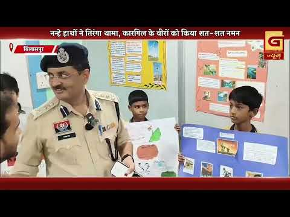
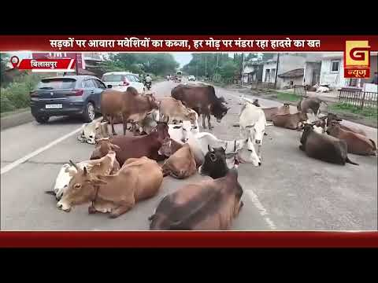
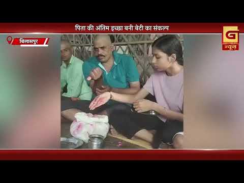

Bilaspur News Hub
1
BUSINESS
2
EDUCATION
5
EVENT
10
GOVERNMENT
2
HEALTH
3
INFRASTRUCTURE
32
INSTAGRAM NEWS
20
NEWS
2
OTHER
15
POLICE
1
RAILWAY
6
SOCIAL
10
YOUTUBE VIDEOS
BUSINESS1

The Hitavada · Scraped: 2026-07-28 08:17:15
India's billionaire count has quadrupled in five years, reaching 576, reflecting growing wealth concentration. The surge indicates rapid economic expansion but also widening inequality.
EDUCATION2

Lokswar · Published: Tue, 28 Ju | Scraped: 2026-07-28 05:03:57
Loyola School’s plea for property‑tax relief was rejected by the High Court. The court dismissed the petition, upholding the municipal tax assessment. The decision leaves the school to pay the original tax amount.
The Hitavada · Scraped: 2026-07-28 12:00:26
Lokansh's outstanding performance guided SFS HighSchool to a semi-final berth in the district cricket tournament. The victory marks a significant achievement for the school team.
EVENT5

The Hitavada · Scraped: 2026-07-28 12:00:26
During the BSC awards, former athlete Ashok Kumar Dhyanchand motivated local sportspersons to pursue excellence and perseverance. His speech highlighted dedication and the importance of sports development.

The Hitavada · Scraped: 2026-07-28 12:00:26
ARYA secured a bronze medal in the recent Asian championships, marking a historic achievement for the region. The win highlights the athletes' hard work and dedication.
The Hitavada · Scraped: 2026-07-28 08:17:15
G. G. Yaneswari and Ari delivered a record-breaking performance at the Commonwealth Games, securing gold and silver respectively in a duel against Nigeria. Their victory highlighted India's growing prowess in international wrestling competitions.
The Hitavada · Scraped: 2026-07-28 08:17:15
President Droupadi Murmu will honour the winners of Bastar Pandum 2026, recognising cultural achievements. The event will celebrate traditional arts and community talent.

G News Bilaspur · Published: 2026-07-27 | Scraped: 2026-07-27 16:26:32
Young students recreated a patriotic tableau commemorating Carghil victory day, showcasing national pride and historical awareness during the event in Bilaspur.
GOVERNMENT10

Nai Dunia Bilaspur · Published: Tue, 28 Ju | Scraped: 2026-07-28 05:03:57
Chhattisgarh High Court has disposed of 32,747 pending cases, marking a historic reduction. The achievement came through a Chief Justice‑led initiative to fast‑track backlogs. The court’s effort significantly eases judicial delays.

Lokswar · Published: Tue, 28 Ju | Scraped: 2026-07-28 08:17:15
Prime Minister Narendra Modi addressed the nation on the NEET paper leak, but his video was taken down by Facebook. Following public outcry, the platform issued a statement and restored the content.

Lokswar · Published: Tue, 28 Ju | Scraped: 2026-07-28 12:00:26
A Bastar delegation has left for Delhi to present the region’s tribal culture and its evolving image to the President of India. The visit seeks to highlight new developments and cultural heritage.
Lokswar · Published: Tue, 28 Ju | Scraped: 2026-07-28 12:00:26
Collector Sanjay Agarwal directed officials to speed up the Vande Mataram campaign and complete all Agristack registrations per committee targets. The push aims to boost civic participation and digital agriculture records.

Nai Dunia Bilaspur · Published: Mon, 27 Ju | Scraped: 2026-07-27 19:19:41
Three government clerks were suspended after being arrested in a major snakebite compensation scam in Bilaspur. Their suspension sparked a work stoppage by other employees demanding action. The case highlights corruption in welfare schemes.
BREAKINGSheikh Hasina, 40 others charged in humanity crimes / शेख हसीना और 40 अन्य पर मानवता अपराध का आरोप
The Hitavada · Scraped: 2026-07-28 08:17:15
Sheikh Hasina and 40 others have been charged with crimes against humanity, marking a significant legal development. The case highlights alleged widespread human rights violations during the political turmoil.

The Hitavada · Scraped: 2026-07-28 08:17:15
A new anti‑paper leak bill has been introduced in the Lok Sabha to curb cheating in examinations. The legislation aims to impose strict penalties for those involved in leaking exam papers.

The Hitavada · Scraped: 2026-07-28 08:17:15
The Chhattisgarh High Court has achieved a historic reduction in pending cases, improving judicial efficiency. This milestone reflects ongoing reforms aimed at faster dispute resolution.
The Hitavada · Scraped: 2026-07-28 08:17:15
A 6,000-page chargesheet has been filed in the NREGS procurement scam, detailing alleged irregularities. The document marks a key step in investigating misuse of funds.
G News Bilaspur · Published: 2026-07-27 | Scraped: 2026-07-27 16:26:32
The Collector and Police issued warnings about ongoing heavy rains, urging residents to avoid flood‑prone areas and take safety precautions.
HEALTH2

Lokswar · Published: Tue, 28 Ju | Scraped: 2026-07-28 08:17:15
New Horizon Dental College organized a free oral health screening camp at Holy Cross Higher Secondary School, examining 308 individuals. The initiative aimed to provide accessible dental care and raise health awareness among students and locals.

G News Bilaspur · Published: 2026-07-28 | Scraped: 2026-07-28 16:10:39
Rising malaria cases have prompted the health department to conduct a comprehensive house-to-house survey. The initiative aims to identify and treat infections quickly, curbing the spread.
INFRASTRUCTURE3

Lokswar · Published: Tue, 28 Ju | Scraped: 2026-07-28 16:10:39
A mixed fruit garden and palm oil plantation will be established in Devkirari village under Bilha block. MLA Dharmalal performed the ceremonial planting, marking the start of the project.

The Hitavada · Scraped: 2026-07-28 08:17:15
Meteorologists predict that rainfall in Madhya Pradesh will increase in intensity over the coming days. Residents are advised to prepare for possible flooding and disruptions to daily life.

G News Bilaspur · Published: 2026-07-27 | Scraped: 2026-07-27 16:26:32
Untamed cattle roam Bilaspur’s streets, posing hazards to commuters and damaging infrastructure. Authorities struggle to control the animals, leading to accidents and traffic chaos. Residents demand effective management and safety measures.
INSTAGRAM NEWS32

Bilaspur Today News shares a recent update, highlighting local developments. The post encourages community engagement and informs about ongoing initiatives. More details are expected soon.
A social media post from Bilaspur Diaries lauds the Koni police force, calling them the best. The heartfelt appreciation highlights their service and community trust. The post has garnered positive reactions from locals.
Even after more than six years since their inclusion, several wards in the municipal corporation continue to face basic civic deficiencies such as roads, drainage, and clean water supply. Residents demand urgent infrastructure development to improve living conditions.
A cobra hidden among bitter gourds at Nehru Nagar market bit a vegetable buyer in Bilaspur. The incident warns people to check produce before purchase. Authorities have issued safety alerts.
Three men used cyber‑fraud money to buy gold coins, defrauding jewelers of lakhs. Police arrested them and recovered the coins. The case highlights laundering of illicit funds via precious metals.
A domestic cook was the mastermind behind a ₹70 lakh theft in Raipur. Police solved the high‑profile case, arresting the cook and accomplices. The stolen goods have been recovered.
Residents are urged to stay alert during the rainy season to prevent accidents and flooding. Avoid water‑logged areas and use proper drainage. The advisory aims to ensure public safety in monsoon.
The Instagram post contains no textual content to summarize. Therefore no further details are available.
बिलासपुर कलेक्टर की बड़ी चेतावनी ⚠️#bilaspur #bilaspurians #flood #barrish #arpa by @bilaspurdist


A fire erupted in the casualty ward of Mekahara Hospital, causing panic among patients and staff. Emergency services quickly evacuated the area and controlled the blaze.


During a zonal meeting, the opposition leader expressed fury over persistent waterlogging and poor official attitudes. The incident highlights ongoing civic infrastructure challenges in Raipur.


एक युवा जोड़े ने राजधानी में इंस्टाग्राम लाइक्स के लिए एक खतरनाक स्टंट किया, जिससे उनकी जान को खतरा पैदा हो गया। यह वीडियो वायरल हो गया है, जो ऑनलाइन प्रसिद्धि के लिए जोखिमों को उजागर करता है।


राजधानी में मछली पकड़ने गए एक युवक की डूबने से मौत हो गई। एसडीआरएफ टीम ने दो ढाई किलोमीटर दूर उसका शव बरामद किया, जो नदी में मछली पकड़ने के खतरों को दर्शाता है।

बिलासपुर में सेवा सेतु केंद्रों के माध्यम से सरकारी सेवाएं अधिक सरल, पारदर्शी और समयबद्ध हो रही हैं। यह पहल नागरिकों के लिए पहुंच और लाल फीताशाही को कम करने पर केंद्रित है।


पचपेड़ी के आदर्श विद्यालय में एक जागरूकता कार्यक्रम आयोजित किया गया, जिसमें पॉक्सो अधिनियम, नए कानूनों और यातायात नियमों पर चर्चा की गई। छात्रों को सुरक्षा, कानूनी अधिकारों और जिम्मेदार व्यवहार के बारे में शिक्षित किया गया।


Collector Sanjay Agarwal conducted a Jan Darshan session, listening to grievances from both urban and rural residents. The meeting aimed to address local issues and ensure swift administrative action.


The collector directed officials to finish Vande Mataram campaign preparations in a time‑bound and effective manner. The initiative seeks to promote national awareness across the district.


Gyaneshwari Yadav, a talented athlete from Rajnandgaon, secured a medal at the Commonwealth Games 2026. Her achievement brings pride to her community and highlights regional sporting talent.


The Sendarik Chowk black spot has been sealed to stop frequent accidents, marking a major traffic overhaul. Authorities hope this will improve safety and ease congestion in the area.


Bilaspur will now operate traffic signals for 18 hours a day to streamline traffic flow and reduce jams. The change aims to make city movement more efficient and predictable.
NEWS20

Lokswar · Published: Tue, 28 Ju | Scraped: 2026-07-28 05:03:57
A 23‑year‑old man was found hanging in Intercity hotel, leaving a heartfelt message on his phone. Police are treating the death as a suspected suicide. The tragic note reveals personal distress.

Nai Dunia Bilaspur · Published: Tue, 28 Ju | Scraped: 2026-07-28 08:17:15
<img src="https://img.naidunia.com/naidunia/ndnimg/28072026/28_07_2026-arpatattut.jpg" />अरपा भैंसाझार परियोजना की कंक्रीट लाइनिंग शुरुआती बारिश का दबाव नहीं झेल पाई और बह गई। घटिया निर्माण के कारण तटबंधों में तेजी से कटाव हो रहा है। कार्य अभी गारंटी अवधि में है, लेकिन ग्रामीणों ने बाढ़ और तबाही की

Nai Dunia Bilaspur · Published: Tue, 28 Ju | Scraped: 2026-07-28 08:17:15
<img src="https://img.naidunia.com/naidunia/ndnimg/28072026/28_07_2026-aropijail22.jpg" />सिरगिट्टी में शादी का झांसा देकर दुष्कर्म करने और दो महीने से फरार चल रहे आरोपी अमन यादव को पुलिस ने उसके ससुराल से गिरफ्तार कर जेल भेज दिया है। वहीं, दूसरी घटना में तारबाहर पुलिस ने फर्जी आईडी बनाकर युवती का अ

CG Wall · Published: Tue, 28 Ju | Scraped: 2026-07-28 08:17:15
बिलासपुर…, अयोध्या के श्रीराम मंदिर से जुड़े चढ़ावे की चोरी की घटना से आहत रामभक्तों की भावनाओं को वरिष्ठ कांग्रेस नेता विजय केशरवानी ने श्रद्धा, सेवा और जनजागरण के विराट संकल्प में बदल दिया। उनके नेतृत्व में निकली तीन दिवसीय “श्रीराम श्रद्धा यात्रा” ने बिलासपुर शहर ही नहीं, बल्कि गांव-गांव और

Lokswar · Published: Tue, 28 Ju | Scraped: 2026-07-28 08:17:15
<p>(अजय श्रीवास्तव) : राजधानी रायपुर के डॉ. भीमराव अंबेडकर स्मृति चिकित्सालय यानी मेकाहारा में आग लगने की घटना से अफरा-तफरी मच गई। आग अस्पताल के कैजुअल्टी वार्ड में लगी, जिसके बाद मरीजों और परिजनों में हड़कंप की स्थिति बन गई। जानकारी के मुताबिक आग लगते ही अस्पताल प्रबंधन ने तत्काल दमकल विभाग को सूचन

CG Wall · Published: Mon, 27 Ju | Scraped: 2026-07-27 16:26:31
बिलासपुर…छत्तीसगढ़ उच्च न्यायालय ने वर्ष 2026 में न्यायिक कार्यप्रणाली के क्षेत्र में एक उल्लेखनीय उपलब्धि हासिल की है। मुख्य न्यायाधीश न्यायमूर्ति रमेश सिन्हा के नेतृत्व और सतत निगरानी में उच्च न्यायालय ने न केवल नए मामलों का तेजी से निपटारा किया, बल्कि पुराने लंबित प्रकरणों को भी रिकॉर्ड गति

CG Wall · Published: Mon, 27 Ju | Scraped: 2026-07-27 16:26:31
बिलासपुर… शादी का झांसा देकर युवती का लंबे समय तक दैहिक शोषण करने और बाद में दूसरी शादी कर फरार हुए आरोपी को सिरगिट्टी पुलिस ने आखिरकार गिरफ्तार कर लिया। पुलिस से बचने के लिए लगातार ठिकाने बदल रहा आरोपी अपने ससुराल में छज्जे पर छिपा मिला, जहां से उसे दबोच लिया गया। पुलिस के अनुसार, …

CG Wall · Published: Mon, 27 Ju | Scraped: 2026-07-27 16:26:31
बिलासपुर। शराब पीने के लिए पैसे मांगना और इनकार करने पर चाकू की नोक पर लूट करना एक युवक को महंगा पड़ गया। सिटी कोतवाली पुलिस ने त्वरित कार्रवाई करते हुए वारदात के कुछ ही घंटों में आरोपी को गिरफ्तार कर उसके कब्जे से घटना में प्रयुक्त चाकू और लूटी गई नगदी बरामद कर ली। …
Lokswar · Published: Mon, 27 Ju | Scraped: 2026-07-27 16:26:31
<p>(जयेन्द्र गोले) : बिलासपुर – विश्व हेपेटाइटिस दिवस के अवसर पर बिलासपुर में राष्ट्रीय वायरल हेपेटाइटिस नियंत्रण कार्यक्रम (NVHCP) के तहत जिला सर्विलेंस इकाई (IDSP), मुख्य चिकित्सा एवं स्वास्थ्य अधिकारी कार्यालय तथा नगर निगम बिलासपुर के संयुक्त तत्वावधान में हेपेटाइटिस जांच एवं टीकाकरण शिविर
Lokswar · Published: Mon, 27 Ju | Scraped: 2026-07-27 16:26:32
<p>(धीरेन्द्र मेहता) : बिलासपुर – बिल्हा विकासखंड के ग्रामीण क्षेत्रों में झोलाछाप डॉक्टरों का अवैध इलाज एक बार फिर चिंता का विषय बन गया है। मोहदा ग्राम पंचायत सहित आसपास के गांवों में बिना मान्यता और वैध चिकित्सकीय डिग्री के कई लोग मरीजों का उपचार कर रहे हैं। ग्रामीणों का आरोप है कि इनकी गतिव

Lokswar · Published: Mon, 27 Ju | Scraped: 2026-07-27 16:26:32
<p>(भूपेंद्र सिंह राठौर) : बिलासपुर – छग प्रदेश राजस्व लिपिक संघ ने सरकंडा थाना पुलिस की कार्रवाई पर गंभीर सवाल उठाते हुए आरोप लगाया है। इसे एकतरफा कार्रवाई बताते हुए संभागायुक्त, आईजी और कलेक्टर को ज्ञापन सौंपकर निष्पक्ष जांच की मांग की है। साथ ही कहा है मांगों पर जल्द निर्णय नहीं लिया गया तो

Lokswar · Published: Mon, 27 Ju | Scraped: 2026-07-27 16:26:32
<p>(भूपेंद्र सिंह राठौर) : बिलासपुर – ट्रैफिक पुलिस के जवान हर मौसम में सड़क पर खड़े होकर शहर की यातायात व्यवस्था संभालते हैं। ऐसे में बारिश के दौरान उनकी ड्यूटी आसान बनाने के लिए पुलिस विभाग ने पहल की है। वरिष्ठ पुलिस अधीक्षक रजनेश सिंह ने ट्रैफिक जवानों को रेनकोट वितरित किए।बारिश मे भी ट्रैफ
The Hitavada · Scraped: 2026-07-28 12:00:26
The Hitavada · Scraped: 2026-07-28 12:00:26
The Hitavada · Scraped: 2026-07-28 12:00:26
The Hitavada · Scraped: 2026-07-28 12:00:26
The Hitavada · Scraped: 2026-07-28 08:17:15
Orange and yellow weather alerts have been issued across Chhattisgarh due to impending storms. Residents are advised to take precautions against heavy rain and wind.
The Hitavada · Scraped: 2026-07-27 16:26:31
OTHER2

G News Bilaspur · Published: 2026-07-28 | Scraped: 2026-07-28 16:10:39
The event 'PRIME' is scheduled for July 28th in Bilaspur. It is expected to cover key local developments and updates.
G News Bilaspur · Published: 2026-07-27 | Scraped: 2026-07-27 16:26:32
This entry seems to be a placeholder for prime news on July 27. No specific details are provided. It likely marks a scheduled news segment.
POLICE15

Nai Dunia Bilaspur · Published: Tue, 28 Ju | Scraped: 2026-07-28 05:03:57
Bilaspur police arrested a man who robbed pedestrians talking on their mobiles. He used a phone to distract victims before snatching belongings. The arrest followed a tip‑off and investigation.

BREAKINGTraffic signals to run 18 hours daily in Bilaspur / बिलासपुर में अब 18 घंटे चालू रहेंगे सिग्नल
Lokswar · Published: Tue, 28 Ju | Scraped: 2026-07-28 12:00:26
Bilaspur traffic police will keep signal lights on for 18 hours daily to boost road safety and cut accidents. The move aims to smooth traffic flow across the city.

Lokswar · Published: Tue, 28 Ju | Scraped: 2026-07-28 13:32:29
An unidentified corpse was discovered in the Kharun river at Mahadev Ghat, causing panic among locals. Police have launched an investigation to identify the victim and determine the cause of death.
Lokswar · Published: Tue, 28 Ju | Scraped: 2026-07-28 13:32:29
Commissionerate police and health officials inspected more than three dozen medical stores across Raipur to curb illegal drug sales. The crackdown aims to prevent substance abuse and enforce regulations.
Lokswar · Published: Tue, 28 Ju | Scraped: 2026-07-28 16:10:39
In Bilaspur, a controversial snake bite incident led to the arrest of three clerks. The clerical union now alleges foul play and has raised concerns over the police's handling of the case.

CG Wall · Published: Mon, 27 Ju | Scraped: 2026-07-27 22:56:29
In Sirgitti, a dispute over money for drinking alcohol escalated into a violent clash where knives and swords were brandished. Police have arrested eight offenders involved in the brawl.

CG Wall · Published: Mon, 27 Ju | Scraped: 2026-07-27 22:56:29
Under SSP Rajnesh Singh’s Operation Pahar, police confiscated 139 narcotic pills and cannabis from a riverbank market, disrupting local drug trafficking.

CG Wall · Published: Mon, 27 Ju | Scraped: 2026-07-27 22:56:29
The gang targeted a youth talking on his mobile at night, snatching his phone and trying to hide their vehicle’s number plate. Police tracked and arrested all members of the gang.

CG Wall · Published: Mon, 27 Ju | Scraped: 2026-07-28 01:22:10
A 22-year-old man died by suicide after being blackmailed with a fake rape case over money demanded for a fake railway canteen job. Police arrested his uncle and aunt, who had allegedly extorted rupees and threatened him when he asked for a refund.
The Hitavada · Scraped: 2026-07-28 12:00:26
A property dispute escalated into a fatal clash, resulting in the murder of a cousin in Bilaspur. Police have registered a case and are investigating the motives behind the violence.
The Hitavada · Scraped: 2026-07-28 08:17:15
The government affirmed that citizens have the right to peaceful protest, warning that agitation cannot be used to justify police excesses. It emphasizes that law enforcement must respect constitutional rights while maintaining order.
The Hitavada · Scraped: 2026-07-28 08:17:15
A petrol bomb was thrown at a BJP office in Sangrur, Punjab, causing damage and raising security concerns. Police are investigating the incident and have not yet identified the perpetrators.

The Hitavada · Scraped: 2026-07-28 08:17:15
A young individual has been taken into custody for illegal possession of a firearm. Police investigations are ongoing to determine the circumstances and any potential links to criminal activity.
The Hitavada · Scraped: 2026-07-28 08:17:15
Police have arrested another suspect involved in the ESAF Bank robbery from Gaya. The capture adds to the ongoing investigation, bringing authorities closer to solving the high-profile case.

G News Bilaspur · Published: 2026-07-28 | Scraped: 2026-07-28 16:10:39
The traffic police in Bilaspur have announced new measures to curb the rising number of road accidents. The decision aims to improve safety and reduce fatalities on the city's roads.
RAILWAY1

The Hitavada · Scraped: 2026-07-28 08:17:15
Chief Minister Dr Mohan Yadav will flag off the Malwa and Somnath Express at Nishatpura Station, adding new stoppages. The move aims to boost connectivity for regional passengers.
YOUTUBE VIDEOS10
A video circulating on social media captures two women engaged in a physical altercation, with one pulling the other's hair. The incident has sparked widespread condemnation and discussions on women's safety.


The latest grand news bulletin for Bilaspur on 28 July 2026 morning provides final updates on ongoing developments. Residents are advised to stay tuned for detailed coverage of local events.


This is a routine evening final news bulletin from Grand News Bilaspur covering updates as of 28 July 2026.


Recent data shows a notable increase in malaria cases in Bilaspur, prompting health officials to step up prevention measures.


Severe allegations have been levelled at Sarkanda Girls School, raising concerns over student safety and institutional conduct.


GRAND NEWS BILASPUR : EVENING FINAL NEWS 27.07.2026 NEWS @News18MPChhattisgarh @IBC24InNews @ZeeNews ...
GRAND NEWS BILASPUR:शहर में आवारा कुत्तों का खौफ करोड़ों का खर्च .
Heavy rainfall has prompted the Bilaspur administration to issue an alert. The warning aims to ensure public safety and preparedness. Residents are advised to take precautions.
A young woman from Takhtpur broke away from age‑old customs, challenging traditional norms. Her act has sparked discussions about gender roles and inspired others to reconsider outdated practices.
The clerk union staged a demonstration against perceived unilateral police actions. They demanded fair treatment and accountability from law enforcement. The protest highlights tensions between staff and police.
